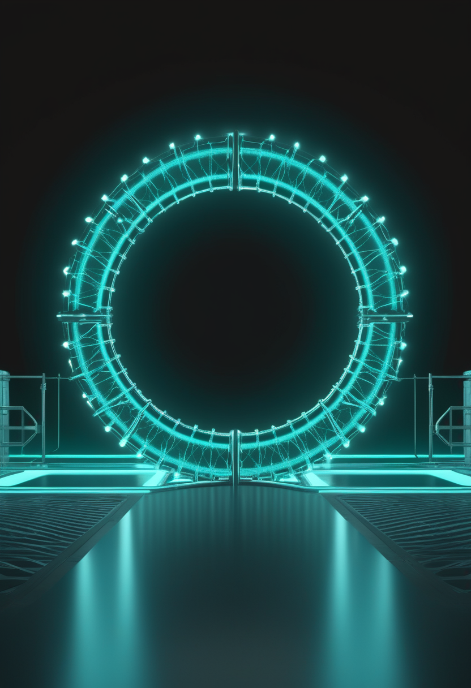
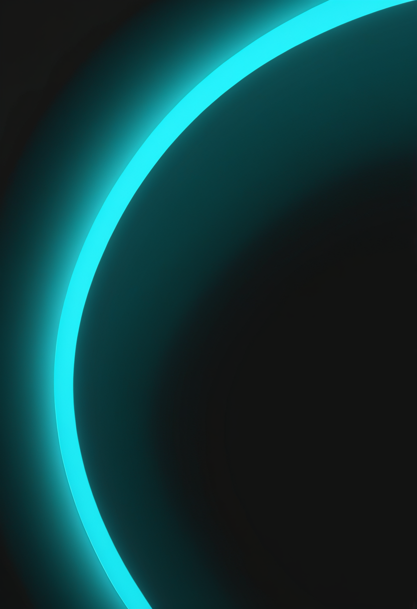
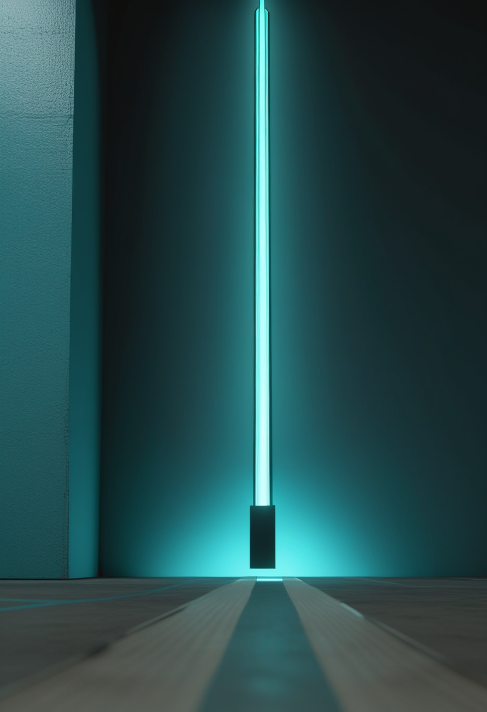
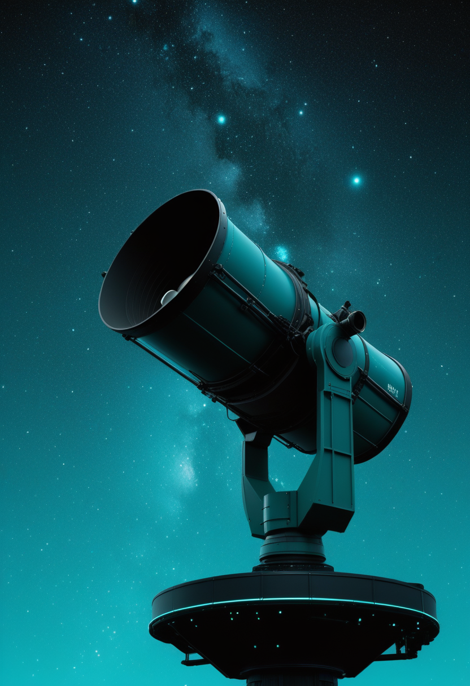
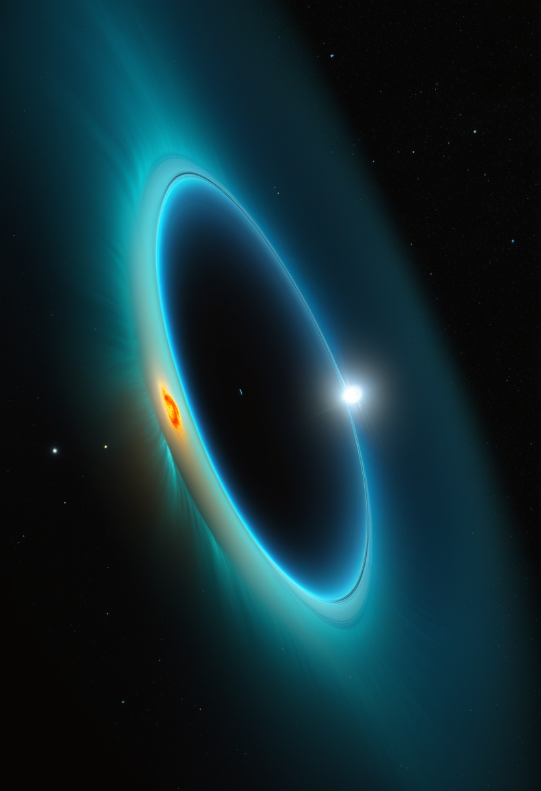

日曜日の便り。低侵襲のBCI(脳コンピュータインタフェース)を手がける米Precision Neuroscienceは2億5,000万ドルのシリーズD資金調達を完了し、累計調達額は4億3,000万ドルに達した。命の章では、イングランドで10月1日から新生児全員を対象にしたSMA(脊髄性筋萎縮症)スクリーニングの実証事業が始まったこと、Scholar Rockのapitegromab(Isembyld)が欧州で申請を一度撤回しつつ日本ではPMDAと追加の臨床試験なしでの申請方針に合意したことを伝える。基盤の章では、DRCのエボラ(ブンディブギョ型)の死者が4,000人を超え、ブニア近郊の避難民キャンプの治療移送拠点が兵士に焼かれ約1万9,000人が避難を強いられたこと、米国の麻疹でペンシルベニア州が977例と1,000例の節目に迫っていることを届ける。畏敬の章では、Euclid宇宙望遠鏡が今月中にダークエネルギー研究の本格データを公開する予定であること、系外惑星からオーロラ電波放射が初めて直接検出されたことを紹介する。美の章では、南アフリカ・ドリモレンで発掘されたホモ・エレクトスの成人化石が、この種が200万年前にはすでにアフリカに存在していたことを確認したという発見を取り上げる。
低侵襲型の脳コンピュータインタフェース(BCI)を手がける米Precision Neuroscienceは9月下旬、Pershing Square Inc.とAckman Oxman Instituteが共同主導する2億5,000万ドルのシリーズD資金調達を完了したと発表した。Duquesne Family Office、B Capital、ARK Invest、Mubadala Capital、日立ベンチャーズなど国際的な投資家が参加し、累計調達額は4億3,000万ドルに達した。同社の主力技術『Layer 7 Cortical Interface』は頭蓋骨の下、脳の表面に薄いフィルム状の電極シートを置く方式で、開頭を伴う植え込み型より侵襲性を抑えながら4,096電極規模の高解像度信号を記録できる。すでに米ペンシルベニア大学、シカゴ大学医療センター、マウントサイナイ・ヘルスシステムなど18の医療機関で100件を超える手術実績を積んでおり、今回の資金は臨床開発プログラムの拡大とFDA審査への対応、商用化に向けた体制整備に充てられる。
英国の国民保健サービス(NHS)は10月1日、イングランドで新生児全員を対象にした脊髄性筋萎縮症(SMA)スクリーニングの実証事業(in-service evaluation)を開始した。既存の新生児血液検査(かかと採血)に組み込む形で、最初の検査施設としてバーミンガムの検査室が稼働を始め、マンチェスターの検査室も年内に続く予定。約40万4,000人の新生児を検査対象群、約16万3,000人を比較対象群(非検査)として評価し、英国国家スクリーニング委員会(UK National Screening Committee)が全国導入の是非を判断するための根拠集めに充てる。SMAは早期の治療開始が運動機能の予後を大きく左右することが知られており、生後5日前後に行う既存の10疾患の検査に加わる形になる。

Scholar Rockは8月下旬、apitegromab(米国での販売名Isembyld)の地域別の規制進捗を公表した。欧州では、製造受託先Catalent Indiana(ノボ ノルディスク傘下)の工場に対する査察で8月上旬に『Official Action Indicated』評価を受けたことを踏まえ、8月中旬に欧州医薬品委員会(CHMP)への販売承認申請を撤回し、別の製造拠点を用いて改めて申請する方針に切り替えた(欧州医薬品庁の文書は8月13日付)。欧州委員会はこの撤回が進行中の臨床試験や人道的供給(compassionate use)には影響しないとしている。一方、日本では医薬品医療機器総合機構(PMDA)が日本人を対象にした追加の臨床試験は不要との判断を示し、同社は2026年中の国内申請(JNDA)提出を目指している。9月に米国で承認された『筋肉を直接守る』薬を、地域ごとに異なる速さで世界に届ける作業が続いている。
新生児全員への網羅的検査と、承認された薬を地域ごとの規制に合わせて届ける作業は、どちらも『できることを、できるだけ早く、できるだけ多くの子どもに』という同じ方向を向いている。

Precision Neuroscienceが完了した2億5,000万ドルのシリーズDは、Pershing Square Inc.とAckman Oxman Instituteが共同主導し、Invus、ARK Invest、Mirae Asset Capital、Korea Investment Partners、日立ベンチャーズなど国際色豊かな投資家が加わった。同社の『Layer 7 Cortical Interface』はすでに米FDAの認可(510(k)クリアランス)を取得済みで、ペンシルベニア大学やシカゴ大学医療センター、マウントサイナイ・ヘルスシステムなど18の医療機関で100件超の手術に使われてきた。今回の資金は、4,096電極規模の高解像度記録を支える臨床開発プログラムの拡大、FDAとの継続的な審査対応、将来の商業化に向けた製造体制の整備に充てられる。開頭を伴う植え込み型と、頭皮の上から測る非侵襲型の中間に位置する『低侵襲』のアプローチに、投資マネーが大きく動いた格好だ。
Neuralink・Synchron・Precisionと、方式の異なる複数のBCI企業に同時に大きな資金が集まり続けている。視線入力については、今回も直近1〜2週の新規一次情報を確認できなかった。
コンゴ民主共和国(DRC)保健省は10月1日、5月15日の流行宣言以来の累計を確定8,300例・死亡4,018人と発表した。前号で伝えたECDC要約の9月29日時点の数字(確定8,224例・死亡3,982人)から、死者が4,000人の節目を超えたことになる。これに加え、震源地イトゥリ州の中心都市ブニア近郊、キゴンゼの避難民キャンプにあった感染者の移送・治療拠点が、武器を捜索していた兵士らによって焼かれる事件が起きた。国連の上級調整官によれば、この事件で約1万9,000人がキャンプからの避難を強いられている。同じ週には、現地で活動していた国境なき医師団(MSF)の職員1人がブンディブギョ型ウイルスに感染し、10月1日にオランダ・ライデン大学医療センターの高度隔離病棟へ医療搬送された。

ペンシルベニア州保健局の最新集計では、同州の麻疹確定例が977例に達し、全米で最も症例数の多い州であり続けている。州内の麻疹関連死は8月以降で5人のままだが、1週間で100例超が積み上がるペースは収まっていない。米疾病対策センター(CDC)の全米集計はほぼ横ばいの約3,886例で、47管轄区域に広がった状態が続く。2026年の全米の年間件数はすでに2000年の排除宣言後で最大となっており、ペンシルベニア一州だけで1,000例の節目に近づいている状況は、局地的な感染拡大の根深さを物語っている。
エボラは死者4,000人という重い節目を越え、治安の乱れが支援活動そのものを脅かし始めている。米国の麻疹は全米では横ばいでも、震源地のペンシルベニア州では収束の気配がない。

欧州宇宙機関(ESA)の宇宙望遠鏡Euclidは、2026年10月中に最初の世界規模のデータ公開(first worldwide data release)を予定している。2025年3月に公開された先行版『Quick Data Release 1』が約63平方度・約38万個の銀河を含むlegacy science中心の内容だったのに対し、今回の10月版は暗黒エネルギーの性質に迫る宇宙論的調査の中核的な成果を含む本格版になる。Euclidは2023年7月の打ち上げ以来、最終的に全天の3分の1超・1万4,000平方度を観測し、6年間の主要ミッションで15億個を超える銀河を観測する計画で、今回の公開はその土台となる最初の本格的な科学的成果になる。

南アフリカのMeerKAT電波干渉計を使った観測チームは、地球から約64光年離れた巨大ガス惑星ベータ・ピクトリスbから発せられる電波を直接検出したとする論文をarXivに公開した(9月22日ごろ報道)。背景にある遠方のクエーサーを位置の基準点として使うことで、恒星と区別して惑星からの微弱で反復する電波バーストを特定した。系外惑星からのオーロラ電波放射の直接検出としては初めてで、観測データから見積もられた磁場強度は少なくとも1,250ガウスと木星(約4〜14ガウス)をはるかに上回り、系外惑星の磁場強度を直接測定した初めての例にもなった。惑星の磁場は大気を恒星風から守る『盾』として働くと考えられており、生命が存在しうる環境かどうかを遠くから判断する新しい手がかりになる。
Euclidは宇宙の大規模構造から暗黒エネルギーの正体に迫り、MeerKATは一つの系外惑星の磁場という、これまで『推測するしかなかったもの』を直接測る方法を示した。どちらも、見えなかったものを見えるようにする仕事である。
ラ・トローブ大学、南アフリカ大学、ウィットウォータースランド大学、ワシントン大学などの国際研究チームは、南アフリカ・ドリモレン主採石場で発掘された成人のホモ・エレクトス化石『DNH 127』についての論文を学術誌Annals of Human Biologyに発表した(9月25日掲載、10月1日報道)。1992年から2019年にかけて同遺跡で発掘された18点の人類化石を再検討したもので、これまで同遺跡で見つかっていたホモ・エレクトスの化石は2〜4歳の子ども(DNH 134)にとどまっていたため、成人の個体が確認されたのは初めてだった。年代は約195万〜204万年前と推定され、頭頂骨と側頭骨の継ぎ目の形状や耳の後ろの乳様突起の小ささなど、ホモ・エレクトスに特徴的な骨の形質を備えている。グルジアのドマニシ遺跡で見つかっている他地域のホモ・エレクトス成人化石より約20万年古く、この種がアフリカで最も早く現れた場所の一つが南部アフリカだったことを裏づける証拠になる。
200万年前の骨の継ぎ目ひとつが、『この種がいつ、どこで人類になったか』という問いに新しい一行を書き足した。測れるものが増えるたびに、人類史の年表は少しずつ書き直されている。
日曜日の便り。Precision Neuroscienceが2億5,000万ドルのシリーズD資金調達を完了し、低侵襲BCIに過去最大級の資金が集まった。命の章では、イングランドで新生児全員を対象にしたSMAスクリーニングの実証事業が10月1日に始まったこと、Scholar Rockのapitegromabが欧州で申請撤回・再提出に向かう一方、日本ではPMDAと追加試験なしの方針で合意したことを伝えた。基盤の章では、DRCのエボラの死者が4,000人を超え避難民キャンプの治療拠点が焼かれたこと、米国の麻疹でペンシルベニア州が977例に達したことを届けた。畏敬の章では、Euclidが今月ダークエネルギー研究の本格データを公開する予定であること、系外惑星から初めてオーロラ電波が直接検出されたことを紹介した。美の章では、南アフリカで見つかった200万年前のホモ・エレクトスの成人化石を取り上げた。
では、また明日の朝に。 — JaH